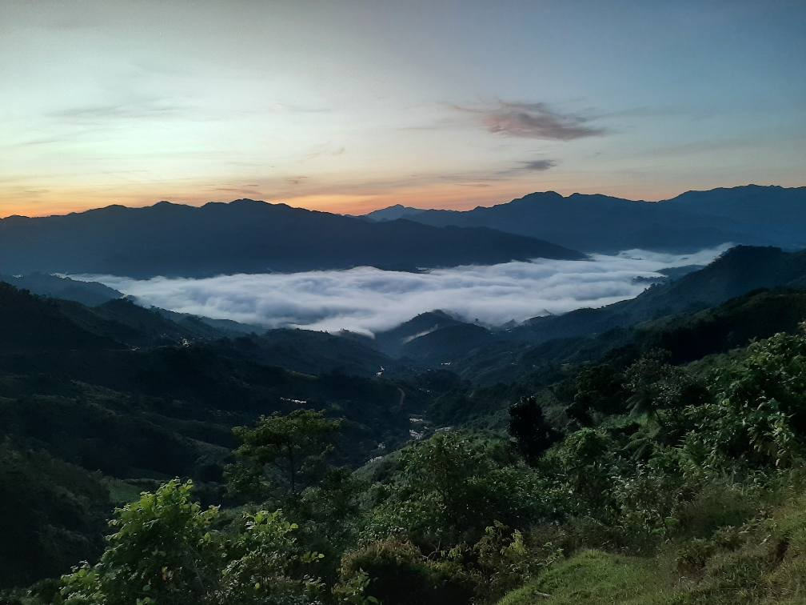
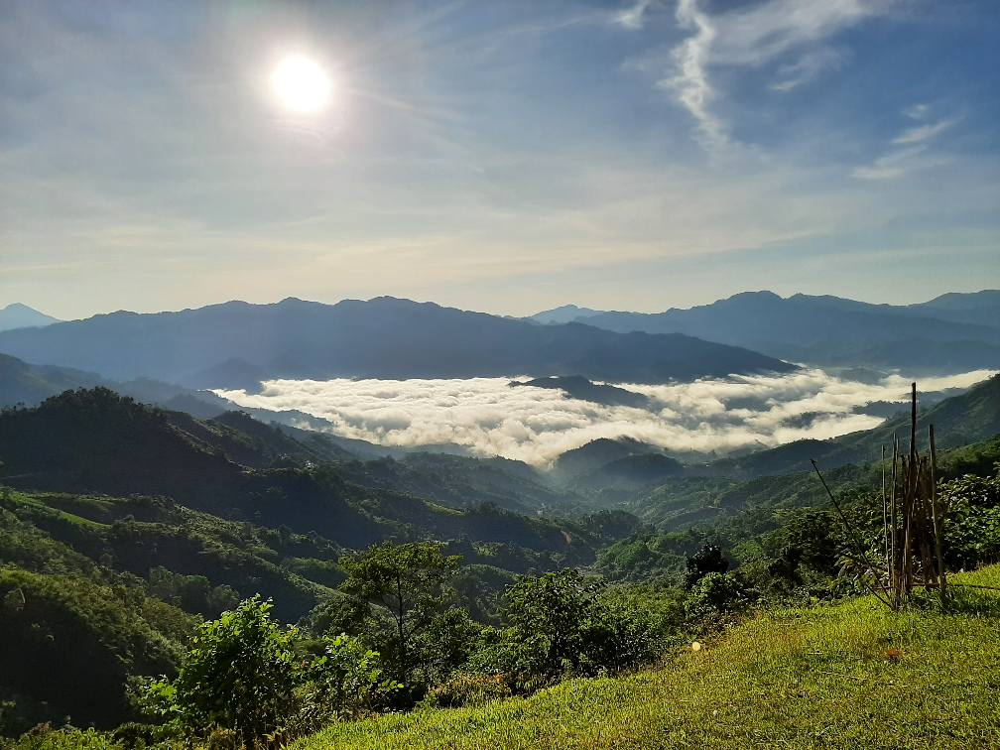
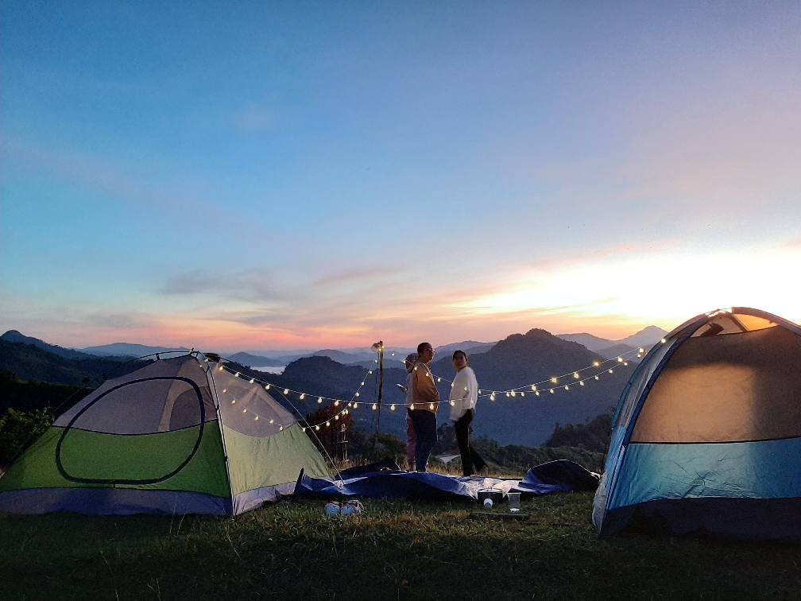
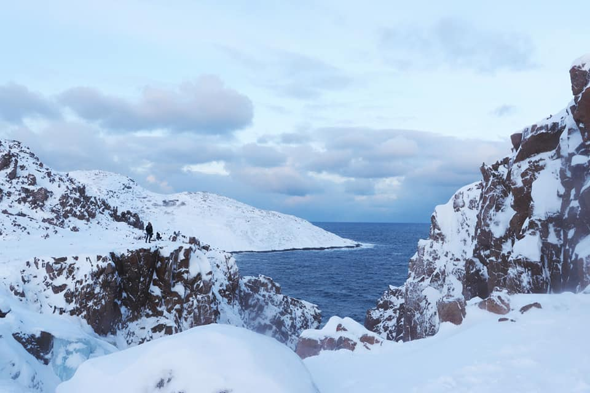
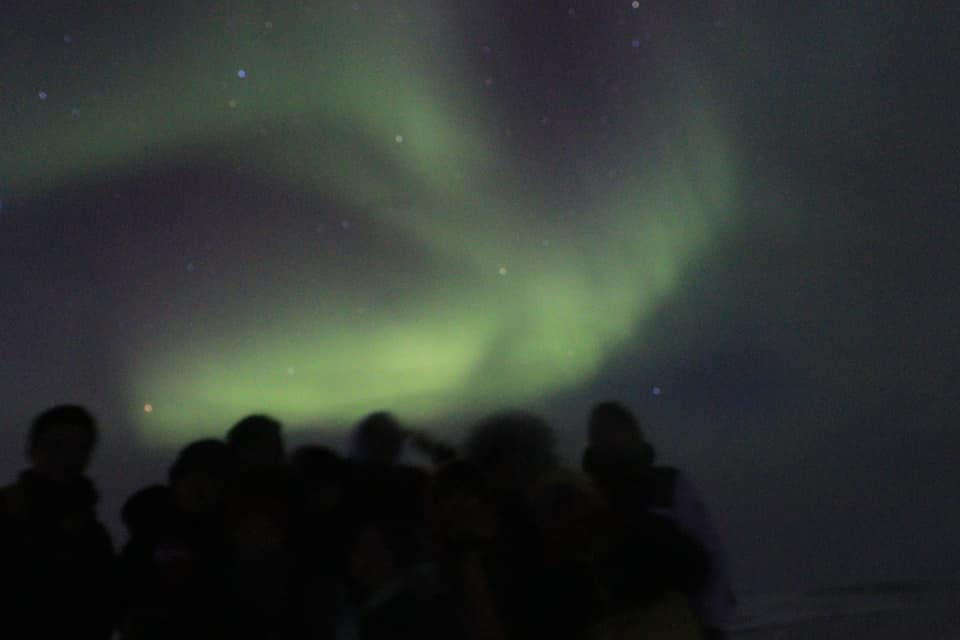
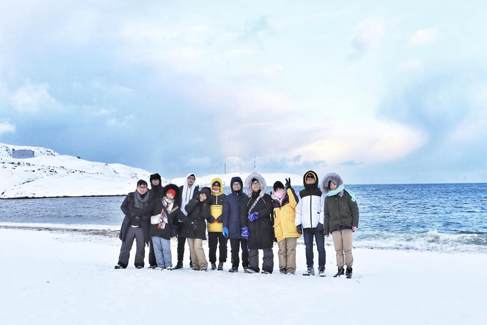

MỘT VÀI BÀI VIẾT NHỎ LƯU LẠI KỶ NIỆM NHỮNG CHUYẾN ĐI NĂM THÁNG TUỔI 20...
NÓC TĂK PỎ, QUẢNG NAM - MỘT THOÁNG NGHĨ VỀ CÁC EM NHỎ NƠI ĐÂY



Đêm cũng dần buông xuống, cũng như mọi ngày mình mở cửa sổ phòng để mong ngắm được gì đó vui vui ở ngoài khoảng không kia. Nhưng mà mình chẳng ngắm được gì hết, chỉ có những làn gió nóng mùa hè ùa vào khéo làm mọi người nhăn nhó hơn một tí và khó tính hơn một tẹo, và ở đằng xa xa tiếng xe từ phố thị Tam Kỳ vang vọng vào ô cửa sổ. 🌃
Tự nhiên mình thấy nhớ da diết cái âm thanh trong trẻo của rừng núi trên nóc Tăk Pổ, xã Trà Tập, Quảng Nam trong đêm khuya thanh vắng, cả không khí trong lành mát rượi và cái se se lạnh vào buổi sớm mai, khi cùng mấy đứa ngắm mây cuồn cuộn chảy quanh triền núi như lớp chăn bông trắng dịu dàng ôm lấy ngôi làng nằm dưới chân núi. Hình như mây chẳng muốn thị trấn đón chào bình minh một cách vội vã.
Cảnh đẹp thật, nhưng đường đi lên nóc Tăk Pổ chắc sẽ đẹp hơn và bớt khó khăn hơn nhiều không bao lâu nữa. Chặng đường lên tới đỉnh núi thật nhiều lo lắng, căng thẳng như những năm tháng của tuổi 20. Bạn Nhi nhiệt tình rìn xe trên con đường đá suối lạc vào nhà người dân địa phương 🛖, được người dân chỉ đường nhưng ở đây mọi người nói tiếng Ca Dong nên tụi mình không hiểu được nhiều lắm, vừa không hiểu vừa bị kiến cắn thật là... Tụi mình bị lạc giữa đường núi đất đỏ lầy lội khi trời chập tối, lúc đó có đứa nói "mình chỉ có một cuộc đời để sống nên đừng liều" vì sợ không đủ xăng và chưa có dầu hỏa để đốt lửa nên tụi mình định xuống núi để quay về. Nhưng cuối cùng tụi mình cũng liều chạy xe đến xịt khói để lên đến đỉnh núi, cùng nhìn nhau im lặng đầy lo lắng khi dắt xe bên mép vực núi để cảm thấy cuộc đời thiệt chơi vơi như cuộc sống của các em nhỏ nơi đây vậy, những đôi chân trần bé nhỏ vẫn đi trên con đường đầy đất đá, vai vẫn mang gùi nặng trĩu trên lưng, dù thiếu thốn đủ thứ nhưng sao mọi người nơi đây vẫn mỉm cười sống thật chân chất và ung dung vậy, mấy đứa nhỏ hồn nhiên mừng rỡ khi được cho vài cái bánh, kiên nhẫn chờ đợi hứng từng giọt nước suối mát lạnh cho tụi mình.🌿🌿🌿
Nhìn con đường và điểm trường đang xây từ xa xa trên nóc Tăk Pổ 🏡, mấy đứa mình chỉ biết hy vọng rằng mấy đứa nhỏ sẽ có tương lai tươi sáng hơn như niềm tin của hai cô giáo trẻ gác lại khó khăn để mang kiến thức đến cho mấy đứa nhỏ nơi đây...
Chuyến đi cũng khép lại, tụi mình đi xuống núi và nhìn lại đoạn đường đã đi qua từ xa xa ở ngọn núi bên kia, chẳng hiểu sao ngày trước hoa hậu H'Hen Niê có thể leo bộ 2 tiếng đồng hồ để lên đến nóc Tăk Pổ thăm các em nhỏ ở nơi đây...
BẮC BĂNG DƯƠNG - ƯỚC MƠ NGẮM CỰC QUANG CỦA CHÚNG MÌNH



🌨 ❄ 🌨
❄ 🌨 ❄
Tuyết vẫn cứ rơi nhẹ xuống thủ đô Matxcova, trời vẫn cứ lạnh mãi, chờ đợi nắng xuân đến. Mình vẫn chưa thể yêu mến mùa đông cho đến khi các anh chị mến iu của xoài kéo mình đến vùng đất có thể là lạnh nhất của quả địa cầu (Ủa “???”). Và thế là Chào cậu, Bắc Băng Dương!!!! Tàu bắt đầu chuyển bánh.
☁️ ❄ 🌞 ❄
❄ ☁️ ☁️
🌲 🌲 🗻🗻🗻🌲
🌲 🚟🚟🚟 🌲🌲
Mùa đông thật kỳ lạ, có lẽ đông đến làm mình cứ ngỡ mây trời như trong xanh hơn, phải chăng là màu tuyết trắng tinh khôi khiến mọi sắc màu trở nên nhẹ nhàng và trong trẻo hơn. Màu nắng cũng vậy, nắng cũng dịu dàng trườn mình qua khắp cỏ cây, như đánh thức từng lớp tuyết đang ngủ yên trên những nhành thông xanh biếc, và trên những mái nhà gỗ bé xinh nằm lặng lẽ giữa cánh rừng bạt ngàn của vùng ngoại ô xa xôi nào đó. Cảnh vật cứ êm đềm trôi bên khung cửa sổ, và rồi những ngôi làng cũng dần khuất chỉ còn lại những rặng núi trắng xóa, lúc ẩn lúc hiện trong làn tuyết mùa đông. Đó là lúc mình biết rằng tàu đã đi xa thật xa Matxcova rồi. Kết nối mạng của mình bắt đầu +4G --> H+ --> E, thế là những bản nhạc đã từ rất lâu vẫn nằm im lìm trong máy tính có cơ hội được cất lên, đó là những bài hát ngày bé, con đã lục tung khắp tủ băng đĩa “Kenny G” của ba mẹ để ngồi bên khung cửa sổ nghe nhạc lúc ba mẹ vắng nhà, và bây giờ những bài hát ấy đã cùng con đến những vùng đất thật là lạ lẫm mà con chưa bao giờ đặt chân đến. Chuyến tàu thật lâu, vì Bắc Băng Dương xa lắm mà, bởi thế ngồi trên tàu cứ ngắm cảnh rồi chạy hết từ khoang này đến khoang khác, và còn được các anh chị dạy chơi bài nữa cơ, nhưng mà các anh chị của mình thì chơi bài ăn gian phải biết luôn.
🐧🐧 🗻 🐬
🐧🐧 🗻 🌊 🌊 🌊 🐾
🗻 🌊 🐋🐋
🐾
Ồ Bắc Băng Dương, chắc mình sẽ được thấy những chú chim cánh cụt, và những chú gấu Bắc Cực như trong “Discovery Chanel” nhỉ, mình cũng tưởng tượng như vậy trước chuyến đi đấy. Nhưng tưởng tượng ấy chỉ xảy ra ở vùng cực của Bắc Băng Dương mà thôi, còn anh chị em chúng mình chỉ đến được bờ biển Barents của Bắc Băng Dương giáp với biên giới phía Bắc nước Nga. Để mong một lần được ngắm Cực quang (tiếng anh là Aurora đó ạ). Chị My nói mình rằng Aurora cũng là tên một nàng công chúa đấy, thảo nào gặp được nàng thật khó biết bao. Các bạn có biết cảm giác chờ đợi để được gặp một cô gái chưa bao giờ thấy ngoài đời thực nhưng đã nghe tên nàng từ lâu là như thế nào không??? Cực kỳ hồi hộp và lo lắng để rồi thất vọng ê chề vì không biết gặp nàng ở đâu và đâu mới chính xác là nàng thật. Anh chị em chúng mình vì nàng Aurora mà đã lang thang bên bờ biển trong đêm tối mịt mùng vào lúc 3h khuya, đứng cạnh ngôi nhà hoang để chờ đợi nàng xuất hiện trong vô vọng. Aurora kiêu thật, thế là anh Hảo và chị Ngân phải nhờ bác tài xế - người dân bản địa vùng Teriberka chở đến nơi mà nàng có khả năng xuất hiện nhất. Thật ra mình cũng chẳng biết bác tài xế chở chúng mình đi đâu nữa, chỉ biết xung quanh toàn sương mờ, xa xa le lói ánh đèn mờ nhạt của những khu làng nằm dưới chân núi và trên kia là ánh sao đêm lững lờ lấp lánh, nhưng mình chẳng buồn ngắm sao nữa, nàng Aurora đâu rồi? Mệt thật! Từ nay Aurora sẽ chỉ là một giấc mơ xa vời trong những câu chuyện thần kỳ của cuộc đời thôi nhé. Rồi bất chợt mình nghe thấy tiếng các chị gọi mình dậy. Nhìn ra cửa xe. Mình hết đứng lên ngồi xuống chỉ để đợi chị My ngồi bên luống cuống mò mẫm xỏ đôi giày vào nữa, ôi. Ôi! Nàng công chúa Aurora cuối cùng cũng bất ngờ xuất hiện trong bộ váy xanh lộng lẫy khiêu vũ điệu valse kiêu sa giữa vòm trời Cực Bắc. Mình cũng không biết phải nói sao nữa, cảm giác của xoài lúc đó là (...), còn các anh chị thì cứ la hét như mấy đứa trẻ làm mình không nhịn cười được nổi luôn.
🌨 ☁️ 🌨☁️
☁️ ✈ 👋
☁️ 🌨 ☁️ 🌨
Có lẽ vì cứ mãi luyến lưu mà Murmansk đã giữ chúng mình thêm một ngày nữa bằng thảm họa lỡ chuyến bay về lại Matxcova không thể nào thảm họa hơn. Nằm ngủ vật vờ ở nhà ga thì mình nhận được tin nhắn của mẹ kèm bài hát “Take me home”, chắc là ba mẹ biết mình nhỡ chuyến bay nên trêu mình rồi.
Và cứ thế, cuộc đời vẫn êm đềm trôi, thời gian vẫn cứ lặng lẽ lướt qua, mình chợt nhận ra rằng ở một nơi nào đó xa thật xa khỏi đô thị vội vã kia nắng vẫn nhẹ hôn lên những rặng tuyết sơn, mây trời vẫn an nhiên như những nụ cười. Và bầu khí quyển vẫn lặng lẽ ôm ta vào lòng, âm thầm bảo vệ ta, để ta tạm quên đi những sóng gió ngoài vũ trụ bao la kia... như tình yêu vĩnh hằng của ba và mẹ. 👨👩👧